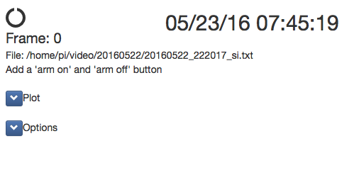
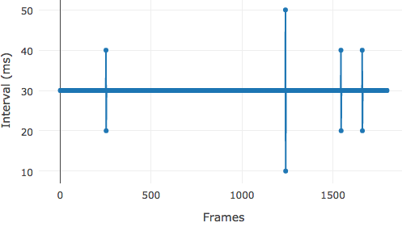

Trigger Camera
This is documentation to construct a system with a Raspberry Pi computer that responds to general purpose digital input-output (GPIO) pulses to start and stop video acquisition during an experiment. External events such as frame times on a scanning microscope are watermarked on the video and saved to a text file. The camera can be controlled from a Python command prompt or with a web browser.

Figure 1. Web-browser interface.
Example web interface for the Trigger Camera. See web help for more information
Overview
This Raspberry Pi Trigger Camera camera is designed to integrate into our Treadmill system. The Treadmill system is advantageous if an Arduino is needed to precisely control other pieces of equipment like LEDs, motors, or valves.
The Raspberry Pi
The Raspberry Pi is a low cost ($35) computer that runs Linux. In addition to USB, ethernet, and HDMI connectors, the Raspberry Pi has a dedicated camera port and GPIO ports. Both the camera and GPIO ports can be easily programmed using Python. The Raspberry Pi provides an end-to-end open source system. Both the hardware and the software is provided by The Raspberry Pi Foundation and is actively maintained and extended by an active developer community.
Software implementation
The software provided here will run a Raspberry Pi camera as a slave to other devices already in place for an experiment. Once the camera is armed, it will continuously record a circular stream of video in memory. When a digital trigger is received, the video will begin being saved to disk. In addition to saving the video after a trigger, the video before the trigger will also be saved. This has the distinct advantage of given you a record of what your animal was doing before a trial was started. In many cases, 'bad trials' can be found because there was a lot of movement (or some other abberent event) before a trial began.
Video resolutions and FPS
The Raspberry Pi camera has the following resolutions and FPS. Set the resolution and FPS in the config.ini file. See the PiCamera Python documentation for more information.
| Resolution | Aspect Ratio | Framerates | Video | Image | FoV | Binning | |
|---|---|---|---|---|---|---|---|
| 1 | 1920x1080 | 16:9 | 1-30fps | x | Partial | None | |
| 2 | 2592x1944 | 4:3 | 1-15fps | x | x | Full | None |
| 3 | 2592x1944 | 4:3 | 0.1666-1fps | x | x | Full | None |
| 4 | 1296x972 | 4:3 | 1-42fps | x | Full | 2x2 | |
| 5 | 1296x730 | 16:9 | 1-49fps | x | Full | 2x2 | |
| 6 | 640x480 | 4:3 | 42.1-60fps | x | Full | 4x4 | |
| 7 | 640x480 | 4:3 | 60.1-90fps | x | Full | 4x4 |
Limitations
The Raspberry Pi runs Linux and like other operating systems including Microsoft Windows and Mac OS it is not real time. There will always be unpredictable delays in the detection and generation of GPIO pulses. If the detection of a fast pulse or the timing of a pulse is critical for an experiment it is strongly suggested to use a more precise microcontroller like an Arduino.
The Raspberry Pi camera is not a high-end camera. It records compressed video files, it does not record single frames to a video file. If you require a camera that captures individual frames, you should buy a high-end camera.
- Saved video files are compressed with .h264
- Saved video files are split into two files (we will wrote code to combine them after a trial)
- Some frames will be late
- Some frames may be missed
- It is difficult to predict which frames will be late and/or missed
See the Analysis section for example Python code to test the limits of this precision.
Parts list
The total cost should be about $150. These parts are widely available at many different online sellers including: Sparkfun, Adafruit, Element14, and Amazon.
| Quatity | Item | Note | Cost | Link |
|---|---|---|---|---|
| 1 | Raspberry Pi 2 or 3 | Either 2 or 3 is fine | $35-$40 | element14adafruit |
| 1 | Class 10 micro SD card | For the Rasperry system, 16 GB is fine | $10 | link |
| 1 | 5V 2A AC to DC power | Make sure it is >2A and don't buy a cheap one | $6-$8 | link |
| 1 | Pi NoIR Camera | $25-$30 | link | |
| 1 | Pi Camera Ribbon cable (2 meters) | $6 | link | |
| 1 | Pi Camera HDMI extension cable | Optional | $15 | link |
| 1 | USB Memory | To save video, 32GB or 64GB is a good starting point | $10-$15 | link |
| 1 | Voltage level shifter | To convert 5V GPIO to 3.5V | $4 | link |
| 4 | IR LEDS | <900nm is best | $0.95 | 850nm/950nm |
| 4 | Resistors | One for each IR LED | $7 (for 500 pack) | link |
| 1 | 5V relay | To turn higher voltages like 12V on and off | $3 | link |
One option is to buy a Raspberry Pi starter kit from Canakit. These kits include most of the parts needed to get a fully working Raspberry Pi.
The number of IR LEDs is not critical. This will depend on how far away your subject is from the camera. Usually 4 IR LEDs is a good starting point.
Building the system
Configuring a Raspberry Pi
We are not going to provide a full tutorial here and will assume a functioning Raspberry Pi. Here is a basic to do list to get started.
- Install Raspbian on an SD card and boot the pi
- Configure wired network
- Make sure the camera is installed
- Install the iPython command line interface
- Install required python libraries
- Mount a USB drive at boot
- SMB to mount/share folders with Windows computers
- AFP to mount/share folders with OS X (SMB will also work with OS X)
- StartUpMailer to have the Raspberry Pi email with its IP address when it boots
Choosing the triggers
There are two different trigger options. These are set in the config.ini file using useTwoTriggerPins
- Two trigger pins, one for triggering start/stop of video and a second for triggering frames. This is the preferred triggering system. This is used to interface with a Bruker microscope.
- One trigger pin for both trigger and frames. This is used to interface with a microscope running ScanImage software.
Wiring the system
- Connect camera to Raspberry Pi
- Connect signal and ground of GPIO/TTL cables from other equipment to the Raspberry Pi (be sure to convert incoming 5V GPIO to 3.5V)
- Connect IR LEDs to the Raspberry Pi. If LEDs need a lot of power, hook them up with a 5V relay and an external 12V power supply. See this tutorial to wire a 5V LED to the Raspberry Pi.
**Important:** The Raspberry Pi can only accept GPIO signals at 3.5V. Many devices use 5V for GPIO/TTL signals. Thus, a level shifter is needed to convert 5V to 3.5V. It is easy to make a voltage divider by hand or to buy a pre-made voltage level shifter.

Install required software
Clone github repository
This will download all the neccessary code into a directory named 'triggercamera'
git clone https://github.com/cudmore/triggercamera.git
Run install script
We provide a ./install.sh script to install all required libraries. If this script fails, try installing manually.
cd triggercamera
./install.sh
Installing required Python libraries (manual)
Install libraries with apt-get
sudo apt-get install python-dev #python development headers
sudo apt-get install python-eventlet
sudo apt-get install python-pandas
sudo pip install plotly
The remaining libraries can be installed with pip.
pip install pyserial
pip install RPi.GPIO
pip install picamera
pip install ConfigParser
pip install flask
pip install flask-socketio
pip install platformio #to upload code to arduino
Arduino
Optional Arduino code is provided in triggercamera/arduino. This code uses an Arduino as a 'pass through' device, receiving 5V TTL pulses and passing them along to the Raspberry Pi at 3.5V (assuming an Arduino Teensy). The Arduino code will also simulate a microscope, sending GPIO triggers for 'trial' and 'frame'.
We strongly suggest using an Arduino Teensy. The Teensy is (i) fast, (ii) has lots of memory, (iii) accepts 5V GPIO and outputs 3.5V, and (iv) all GPIO pins can be assigned as low level interrupts.
PlatformIO is a command line interface to compile and upload code to an Arduino. It is easy to run at the command prompt on a Raspberry Pi. See this blog post on installing and configuring PlatformIO.
Once PlatformIO is installed and configured to talk to an Arduino, upload code to an Arduino using
cd triggercamera/arduino/bExperiment
platformio run --target upload
The correct serial port needs to be specified in config.ini. Find the Arduinos serial port by looking for something like ttyACM0 in
ls /dev/tty*
Running the camera
Live video output
The primary interface for controlling the camera is through the Python command prompt or a web browser. An added feature is a real-time video can be viewed on an external video monitor. This is as simple as connecting the RCA plug on the Raspberry Pi to an external video monitor (not a computer monitor). Using this live video feed does not interfere with any of the Python or web browser code that interacts with the camera to trigger and save video.
NOTE: The Raspberry Pi 2/3 uses a 3.5mm audio plug for both audio and composite video out. See here.
Python command line
The iPython command line interface should be used.
With triggercamera.py, the camera can be controlled with a Python command line. Once the camera is armed with 'startArm()', it will start and stop video recording following GPIO triggers.
import triggercamera
tc = triggercamera.TriggerCamera()
tc.startArm() #arm the camer to respond to triggers
tc.stopArm() #stop the camera from responding to trigger
Additional interface
#start and stop video recording as much as you like
tc.startVideo()
tc.stopVideo()
# single images can be saved every few seconds while video is being recorded
tc.doTimelapse=1
tc.doTimelapse=0
# todo: add interface to control two different LEDs
Web interface
triggercamera_app.py provides a web server allowing the camera to be controlled through a web browser.
Run the web server with
python triggercamera_app.py
Then, bring up the web page from a browser (we suggest Chrome) using the IP address of the Raspberry and port 5010
http://192.168.1.60:5010
Additional documentation on using this web interface is in the web help page.
Streaming video in the web interface
Optionally, real-time video can be streamed from the camera to the web interface. This requires uv4l to be installed. See this blog post to install uv4l on a Raspberry Pi.
REST Interface
In addition to the point and click web interface, the web server provides a REST interface that can be remotely scripted using a set of web addresses.
http://192.168.1.12:5010/startarm
http://192.168.1.12:5010/stoparm
http://192.168.1.12:5010/startvideo
http://192.168.1.12:5010/stopvideo
http://192.168.1.12:5010/timelapseon
http://192.168.1.12:5010/timelapseoff
http://192.168.1.12:5010/lastimage
Client side code
The web server is running in Python on the raspberry Pi. When a web page is served to a client, the interface is provided using a large collection of client-side code written in JavaScript.
- Socket-io allows the Flask server to push updates to web-page without reloading the page
- Bootstrap for page layout, buttons, sliders, value display
- jquery to handle logic of user interface
- plotly.js to plot the arduino stimulus
- highcharts.js to plot a trial in real-time while it is running (only used in treadmilll)
- jqgrid to display a table of trials from disk
User configuration
Modify config.ini and restart the camera code
[serial]
useSerial: True
port: /dev/ttyACM0
baud: 9600
[system]
savepath: /video
watchedpathon: False
watchedpath: ''
[triggers]
useTwoTriggerPins: 1
triggerpin: 27
framepin: 17
[led]
ledpin1: 2
ledpin2: 3
[camera]
fps: 30
resolution: 640,480
bufferSeconds = 5
[simulatescope]
on: 1
initialDelay: 1
frameInterval: 30
frameNumber: 300
Output video
Video is saved in the h264 video format. This is a very efficient video codec that make very small but highly detailed videos. Before these h264 video files can be analyzed, they need to be converted to include the frames per second. This can be done in a number of video editing programs. One way to do this conversion is by using the command line program ffmpeg. Because ffmpeg can be scripted, it is easy to incorporated into most workflows. The status of ffmpeg on the Pi is confusing. Here, we use a fork (or a nasty illegal fork?) called avconv.
Install avconv
sudo apt-get install libav-tools
Convert one .h264 file
avconv -r 30 -i 20160604_181119_after.h264 -vcodec copy 20160604_181119_after.mp4
Pseudocode to convert a directory of .h264 files
srcDir = '/src/dir/with/video/'
dstDir = 'dst/dir/for/mp4/'
for file in srcDir:
outfile = file.strip('.h264') + '.mp4'
avconv -r 25 -i file -vcodec copy dstDir+outfile
Output files
Each time the camera is triggered to save video, a .txt file with frame times is also saved.
Here are the first 5 frames of an output .txt file. The first line is a header, second line gives column names, third line is start of data.
date=20160606,time=223717,trial=1,fps=30,width=640,height=480,numFrames=1799,ardFrames=0
date,time,seconds,event,frameNumber
20160606,223623,1465266983.09,startVideo,
20160606,223623,1465266983.12,numFrames,1
20160606,223623,1465266983.15,numFrames,2
20160606,223623,1465266983.18,numFrames,3
20160606,223623,1465266983.21,numFrames,4
20160606,223623,1465266983.24,numFrames,5
Analysis
Analyzing output .txt files
We have provided Python code to load, analyze and plot the output .txt files. See an example iPython notebook. Because the Raspberry Pi is not configured with a keyboard/mouse/monitor, this code can be run on a different machine using an iPython notebook.
Bring up an iPython web interface
# if your Raspberry Pi is on the network at 'pi60'
cd /Volumes/pi60/triggercamera/analysis/
ipython notebook
Here is an analysis of the frame interval detected by the Raspberry Pi and a good example of some of the limitations. Using /arduino/bExperiment/src/bExperiment.cpp an Arduino output a frame pulse every 30 ms.
In general, the Raspberry Pi does not miss frames but can occasionally detect frames late. The performance of the Pi can be degraded if additional software is run on the Pi. In general, keep it minimal.

Analyzing video
We will provide Python code using OpenCV to load and browse video files.
Add ons
By creating a system with a Raspberry Pi there are a large number of ways to quickly and cheaply extend the system in very useful ways.
- [Done] Add an Arduino microcontroller
- Add an LCD/button controller
- Add a touch-screen interface
Troubleshooting
-
Test the camera with
raspistill -o tst.jpg
-
If the camera triggering is erratic or the Raspberry is missing fast pulses, check that all digital lines going to the Raspberry Pi are grounded. It is good practice to connect the Raspberry Pi ground pins to the ground (shield) of any digital lines.
-
If the recorded video changes light-levels erratically, this is usllay due to fluctuations in the power to the Pi. Make sure the Pi has a DC power supply >2 Amps. If additional LEDs are being powered by the Pi, consider breaking these out with their own dedicated power supplies.
-
See this to auto mount an SMB share on boot
To Do
- Look at controlling the camera with RPi_Cam_Web_Interface
- Add basic camera controls for setting brightness. contrast, etc. etc.
- Done: Implement a Flask homepage to provide buttons to control camera and feedback during a trial.
- Done: Add control and interface for two LEDs (e.g. IR and white).
- Done: Add a header to output files #fps=xxx;width=xxx;height=xxx
- Write a Python script to batch process a folder of .h264 into .mp4 (with fps)
- Write a python video browser using Open-CV.
- Will not do this: try using easydict so i can use'.' notation in code
- Add a physical emergency 'stop' button